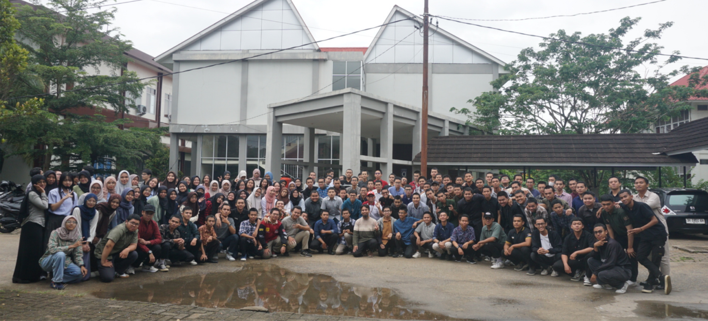
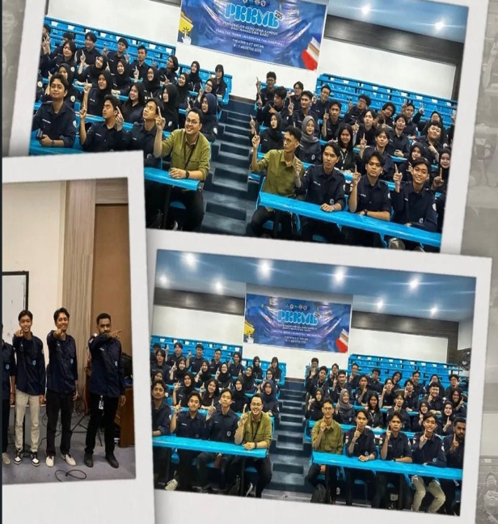
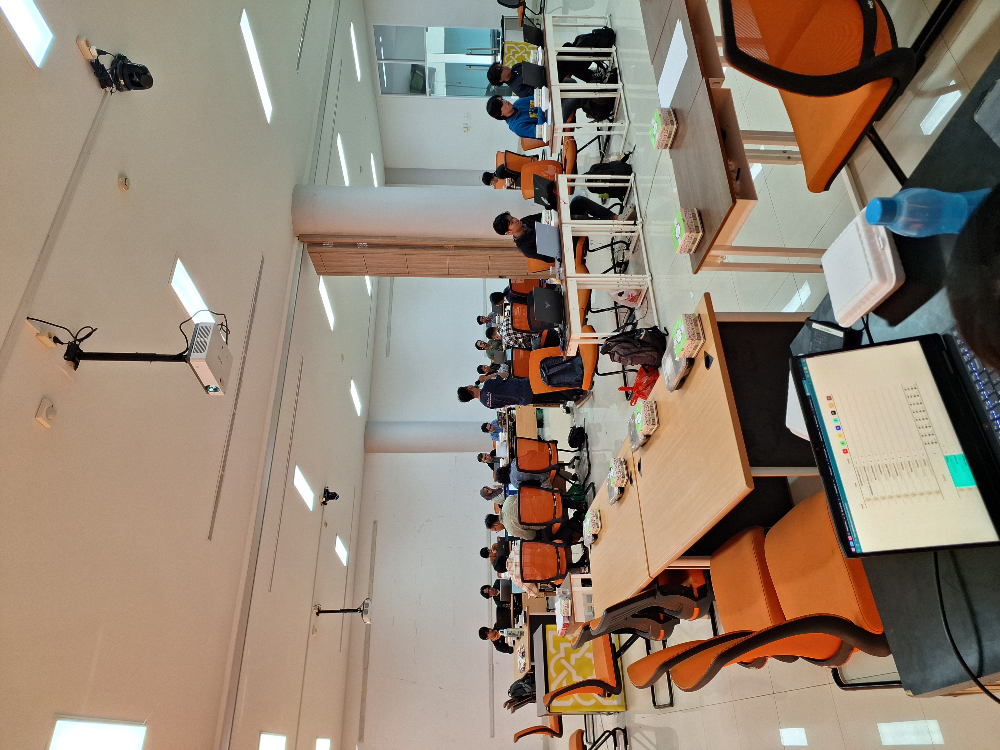
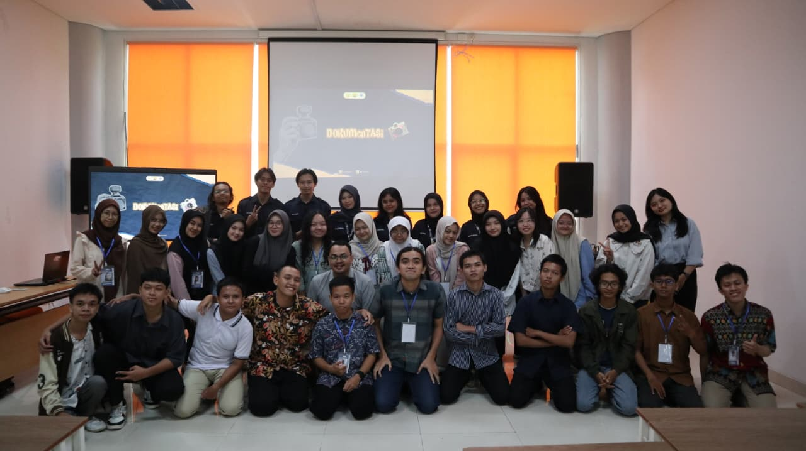
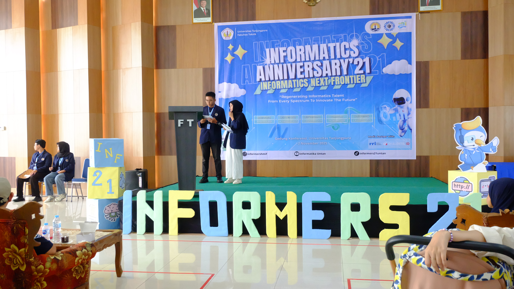

Membangun ekosistem kolaboratif di mana teknologi bertemu dengan kreativitas, membentuk calon pemimpin industri masa depan.
Himpunan Mahasiswa Informatika (HMIF) Universitas Tanjungpura bukan sekadar organisasi, melainkan rumah bagi para pemimpin teknologi. Kami percaya bahwa pendidikan formal adalah fondasi, namun komunitas adalah akselerator.
Melalui berbagai inisiatif, kami menjembatani kesenjangan antara kurikulum akademik dan kebutuhan industri, sambil tetap menjaga semangat kekeluargaan dan integritas ilmiah.
518
Mahasiswa Aktif
8
MITRA

Inklusivitas &
Kolaborasi
Struktur organisasi yang dirancang untuk efisiensi dan pengembangan kapasitas anggota di berbagai bidang strategis.
Divisi ini menyelenggarakan kaderisasi terstruktur, mentoring berkala, dan pelatihan kepemimpinan serta soft-skill. Program kerja mencakup onboarding anggota baru, workshop kepemimpinan, proyek kolaboratif, dan kegiatan pengabdian yang melatih tanggung jawab sosial. Fokusnya adalah menyiapkan kader yang kompeten dan menjaga regenerasi organisasi.
Divisi ini mengelola strategi komunikasi dan produksi konten HMIF, termasuk perencanaan editorial, manajemen media sosial, serta dokumentasi acara. Program kerjanya meliputi pembuatan materi promosi, publikasi kegiatan, dan penguatan identitas digital agar informasi organisasi tersampaikan konsisten dan menarik.
Divisi ini memfasilitasi persiapan lomba dan pengembangan proyek teknis melalui coaching clinic, bootcamp berbasis proyek, serta study club untuk Competitive Programming, Software Development, dan Data/ML. Kegiatan termasuk seleksi internal, bimbingan kompetitif, dan inisiatif digitalisasi seperti pengembangan website dan dashboard untuk mendukung ekosistem inovasi HMIF.
Divisi ini memperkuat tata kelola dan kapabilitas internal melalui pelatihan pengurus, penyusunan SOP sederhana, dan evaluasi proses kerja. Program kerjanya mencakup pengembangan budaya organisasi, peningkatan efektivitas koordinasi, dan kegiatan peningkatan profesionalisme sehingga operasi HMIF menjadi lebih terstruktur dan efisien.
Divisi ini merancang dan melaksanakan program pengabdian serta aksi sosial yang berdampak, termasuk pendampingan komunitas dan bantuan kemanusiaan. Kegiatan meliputi identifikasi kebutuhan lapangan, pelaksanaan terstruktur, dan evaluasi dampak untuk memastikan keberlanjutan dan manfaat nyata bagi masyarakat.
Divisi ini mengembangkan unit usaha organisasi, merancang skema pendanaan kreatif, dan menjalin kemitraan strategis untuk mendukung keberlanjutan program HMIF. Unit kerjanya meliputi riset peluang usaha, penyusunan proposal kemitraan, dan pengelolaan sponsor untuk meningkatkan kemandirian finansial dan akses jaringan profesional.
Kegiatan tahunan yang menjadi ikon Informatika UNTAN.

Kegiatan buka bersama seluruh keluarga Informatika Untan yang selalu diadakan setiap tahunnya.

Program intensif GEMASTIK adalah kompetisi IT tahunan tingkat nasional yang mempertemukan mahasiswa se-Indonesia. Lomba ini fokus pada pemecahan masalah lewat teknologi, dengan cabang yang beragam seperti programming, cyber security, data mining, sampai pengembangan UI/UX.

Program intensif pengembangan skill teknis mahasiswa Informatika bersama mentor profesional dari industri.

Kompetisi Coding untuk mengasah skill coding mahasiswa Informatika.

Perayaan ulang tahun Informatika UNTAN, momen kebersamaan dan kebanggaan seluruh keluarga besar Informatika.
Belajar logika dan algoritma bersama, di mana kalian bisa berkembang dan membuka peluang mengikuti kompetisi pemrograman di berbagai level.
Gali potensi tersembunyi dari tumpukan data! Di sini kita akan bereksplorasi dengan algoritma Machine Learning, membedah teknik klasifikasi, hingga melatih model prediktif untuk menghasilkan insight yang bermakna.
Wujudkan idemu jadi produk digital yang nyata! Kita akan ngoding bareng dari merancang frontend yang interaktif, membangun backend yang tangguh, serta mengintegrasikan berbagai API untuk menciptakan aplikasi web masa kini.


Bergabunglah dengan HMIF untuk memperluas jaringan, mengasah skill, dan menciptakan dampak nyata.
Sekretariat
Gedung Fakultas Teknik Lt. 2
Jl. Prof. Dr. H. Hadari Nawawi
Jam Operasional
Senin - Jumat
08:00 - 17:00 WIB
Media Sosial
@hmif.untan
YouTube: HMIF UNTAN TV